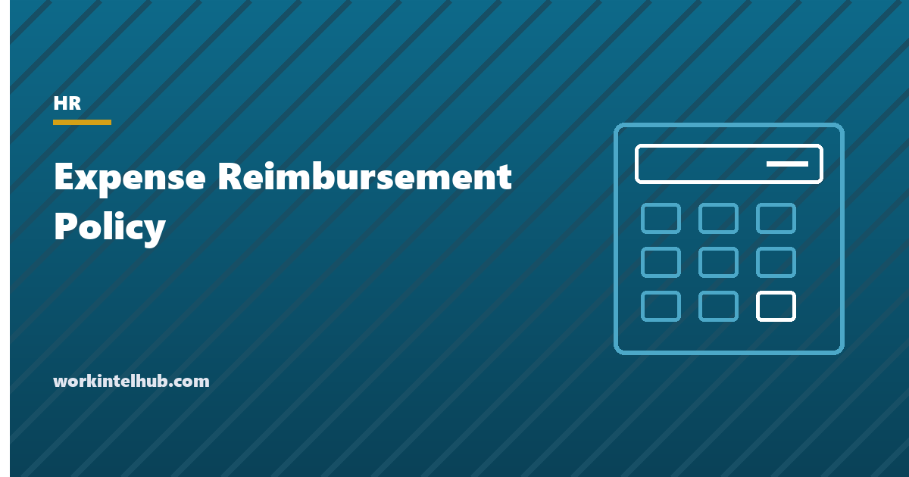

Expense Reimbursement Policy

An expense reimbursement policy says what the company pays back, how to claim it, and by when. Written well, it does two further jobs. It qualifies as an accountable plan under IRS rules, which keeps reimbursements out of employees' taxable wages and off the company's payroll tax bill. And it meets the state laws, now in eleven jurisdictions, that require employers to reimburse necessary business expenses, including the phone and internet costs of remote work, whether or not the policy mentions them.
The generator below writes a policy that does both. The rest of the page covers the accountable plan rules, the 2026 mileage and per diem figures, the state laws and what they add, and the handful of choices (receipt thresholds, deadlines, stipends) that decide whether the policy is followed.
Expense reimbursement policy generator
Nothing typed here leaves your browser. The policy is written as an IRS accountable plan so reimbursements are not taxable wages; the state reimbursement laws below may require more than it says.
The accountable plan rules
IRS Publication 463 sets three conditions for reimbursements to be excluded from wages. The expense must have a business connection: incurred while performing services as an employee. It must be substantiated within a reasonable period, which the IRS treats as 60 days under its safe harbour: the amount, date, place and business purpose, with receipts for lodging at any amount and for other expenses of $75 or more. And any excess advance must be returned within a reasonable period, 120 days under the safe harbour. A policy that misses any of the three makes every reimbursement taxable wages, which is an expensive way to save paperwork.
The generator's thresholds are tighter than the IRS minimums on purpose: a $25 receipt rule and a 30-day deadline are easier to enforce than $75 and 60 days, and they keep the claims close to the events they describe. Commuting between home and the normal workplace is never reimbursable under the plan; travel between workplaces, to clients and from a home office that is the principal place of work is.
2026 mileage and per diem
| Item | 2026 figure | Source and notes |
|---|---|---|
| Business mileage, January 1 to June 30, 2026 | 72.5 cents per mile | IRS standard mileage rates; the rate was announced in December 2025 |
| Business mileage, July 1 to December 31, 2026 | 76 cents per mile | A mid-year increase, which the IRS makes rarely; policies that name the rate rather than referring to it went stale on July 1 |
| Standard CONUS per diem, fiscal 2026 (October 2025 to September 2026) | $110 lodging, $68 meals and incidentals | GSA per diem rates; around 300 higher-cost areas have their own rates, and the fiscal 2027 rates take effect October 1, 2026 |
| First and last day of travel | 75 per cent of the M&IE rate | Standard proration |
| Receipt threshold | $75 (any amount for lodging) | IRS minimum; most policies set a lower internal threshold |
Employers may reimburse mileage at any rate; above the IRS rate the excess is wages, below it the employee bears the difference and, in the states below, may be entitled to claim actual costs instead. Per diem reimbursement at or below the GSA rate needs no meal receipts, which is the main reason to choose it; the travel policy page covers the booking and class rules that sit alongside.
The state laws
Eleven jurisdictions require employers to reimburse employees for business expenses, and the broadest of them cover the costs of remote work. California (Labor Code 2802), Illinois, Montana, New Hampshire, North Dakota and South Dakota require reimbursement of all necessary expenses an employee incurs at the employer's direction, which California courts have held includes a reasonable share of a personal phone plan and home internet when their use is required. Iowa requires reimbursement of expenses authorised by the employer, within 30 days; Minnesota covers equipment used for work other than tools of the trade; Massachusetts, New York and the District of Columbia have narrower rules tied to specific categories or to expenses that would take pay below the minimum wage; and Seattle has a local ordinance. Pennsylvania's rule is limited to deductions.
Three consequences for the policy. A flat stipend for remote work is lawful in the broad states only if it covers the actual business share, so the generator lets employees in those states claim actual costs instead. A submission deadline cannot extinguish a claim the state requires to be paid, so the policy says late claims "may be declined, except where state law requires reimbursement". And a policy that does not mention remote expenses at all does not avoid them; it just means the claims arrive without a process. The cell phone policy and remote work policy pages cover the same ground from the device and the location side.
The choices that decide whether it is followed
- Deadline: 30 days is the common setting. Shorter is unrealistic for travellers; longer produces the quarterly pile that finance dreads.
- Receipt threshold: $25 to $50. Every receipt for every coffee is a policy nobody follows; no receipts below $75 is a policy nobody can audit.
- Payment time: within one payroll cycle of approval, and separately identified so it is not mistaken for pay. Employees who front costs for six weeks stop fronting them, and the work stops with them.
- Pre-approval limit: a single dollar figure above which approval is needed first, applied to everything, rather than a category list.
- One system: photo of the receipt, purpose, submit. Policies fail at the spreadsheet stage.
- A named route for disputes, because a declined claim for a required expense is a wage claim in waiting; the complaint form page covers the handling.
Key takeaways
- A reimbursement policy should be an IRS accountable plan: business connection, substantiation within 60 days, return of excess advances within 120 days. Otherwise reimbursements are taxable wages.
- 2026 mileage: 72.5 cents to June 30, 76 cents from July 1. Standard per diem for fiscal 2026: $110 lodging, $68 meals and incidentals.
- Eleven jurisdictions require reimbursement of business expenses; California and five others cover all necessary expenses including the business share of personal phone and internet.
- Stipends must cover actual costs in the broad states; deadlines cannot extinguish legally required claims.
- 30-day deadline, $25 to $50 receipt threshold, payment within one payroll cycle, one pre-approval limit, one system.
Frequently asked questions
What should an expense reimbursement policy include?
What is reimbursed and what is not, the mileage rate, how meals are handled (actual with a cap, or per diem), remote work costs, how and when to submit claims, the receipt threshold, who approves, how quickly payment is made, rules for advances and company cards, a state-law clause, and the consequences of misuse. The generator on this page produces all of that as an IRS accountable plan.
What is an accountable plan?
An IRS arrangement under which employee reimbursements are not taxable wages, provided three conditions are met: expenses have a business connection, they are substantiated with amount, date, place and purpose within a reasonable period (60 days under the safe harbour), and any excess advance is returned within a reasonable period (120 days). A policy that fails any condition makes reimbursements taxable.
What is the IRS mileage rate for 2026?
72.5 cents per mile for business travel from January 1 to June 30, 2026, and 76 cents per mile from July 1 to December 31, 2026, after a mid-year increase. Policies should refer to the rate in force on the date of travel rather than naming a figure that goes stale.
Do employers have to reimburse remote employees for phone and internet?
In California, Illinois, Montana, New Hampshire, North Dakota and South Dakota, yes, when the employer requires the use: a reasonable business share must be reimbursed. Iowa, Minnesota, Massachusetts, New York, the District of Columbia and Seattle have narrower rules. Elsewhere it is not required, though stipends are common. A flat stipend satisfies the broad states only if it covers the actual business share.
Can an employer refuse a late expense claim?
Under the policy, yes, which is why a deadline matters. But in states that require reimbursement of business expenses, a required expense remains owed regardless of the deadline, so the policy should say late claims may be declined except where state law requires payment.
Do I need receipts for every expense?
The IRS requires receipts for lodging at any amount and for other expenses of $75 or more, with amount, date, place and purpose recorded for everything. Most employers set a lower internal threshold, commonly $25, and per diem meal reimbursement at or below the GSA rate needs no meal receipts at all.